2D基礎元素與屬性
元素屬性

# 1-元素繪製
1. 新增按鈕，用來新建圖紙、圖示、元件
2. 編輯
3. 基本元素繪製 分別是：不規則圖形、圓形、圓角矩形、矩形、正多邊形、三角形、星形、圓弧形
4. 文本繪製
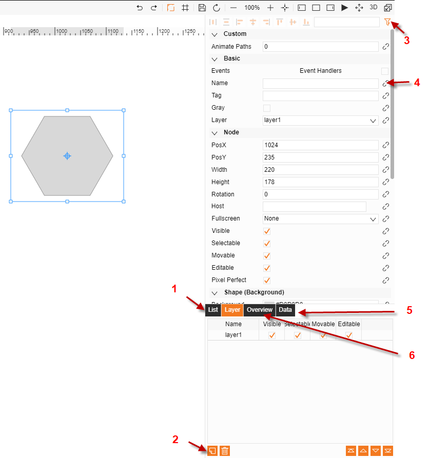
# 2-圖層屬性
1. 圖紙的樹狀關係圖
2. 增加、刪除圖層, 選則圖形, 將圖形的圖層屬性修改成 新建的圖層, 可用做分類管理
3. 過濾屬性
4. 可綁定函數
5. 圖紙的JSON格式敘述
6. 俯視圖
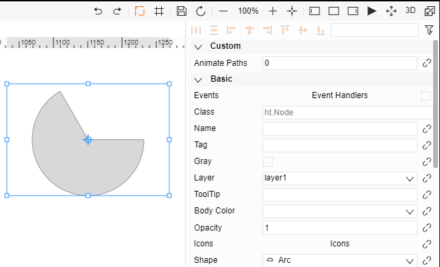
# 3-基礎屬性
1. 事件處理
處理元素的滑鼠點擊、進入、移出等事件
2. 標籤
元素標籤，可以通過dataModels.getDataByTag(標籤值)獲取該元素資料
3. 不規則圖形
可通過下拉清單修改圖形
4. 圖示集
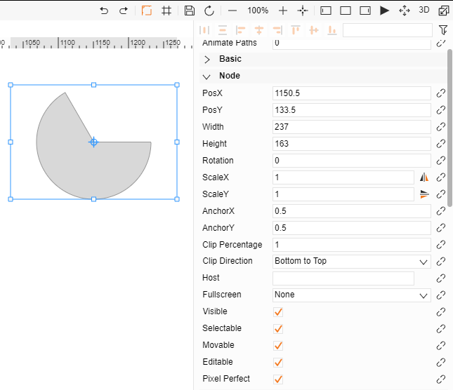
節點屬性用來調整元素的大小、位置
1. 橫、縱坐標、寬度、高度
調整元素的位置和大小
2. 角度、錨點
調整元素的旋轉，錨點為旋轉的中心點。橫、縱錨點為錨點的橫、縱坐標
3. 縮放
調整元素橫縱縮放
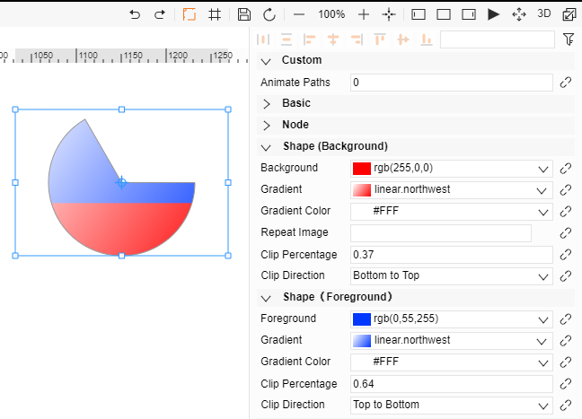
4. 裁切
選擇裁切方向和裁切比例來顯示部分圖形5. 吸附節點 如有吸附會顯示所吸附的目標
一個元素上添加兩種顏色/漸進色功能
首先設置“裁切比例”和“裁切方向”兩個屬性，預設“裁切比例”為1，為不裁切；然後設置屬性欄中的“背景”和“前景”則可以看到該節點具有兩種顏色
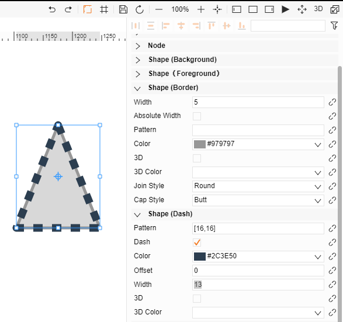
邊框和虛線樣式設置
1. 虛線樣式
一個陣列來設置，第一個值為實線長度，第二個值為虛線長度。
2. 虛線偏移值
虛線的動態效果就是需要偏移值的改變
3. 虛線寬度
值為0，則和邊框寬度一致，不為0，則按照寬度自行設置
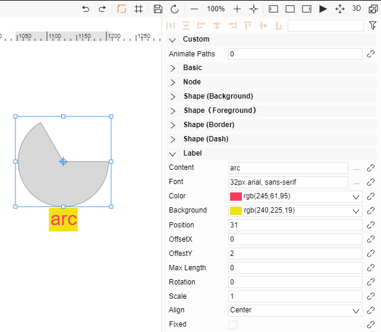
文本內容設置：
1. 文本
內容屬性設置顯示的文字內容，字體、顏色屬性來修改文字樣式
2. 位置
預設處於元素正下方，可通過位置、偏移屬性來修改
3. 最大長度
0代表不限制，非0代表限制，（此處為圖元大小）
4. 角度、縮放
調整文本顯示的形態和大小
# 4-元素特殊屬性
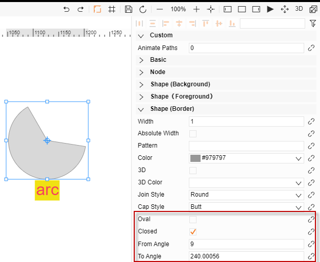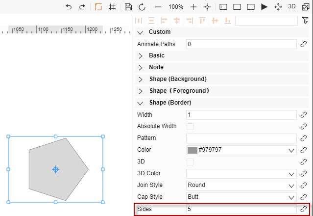
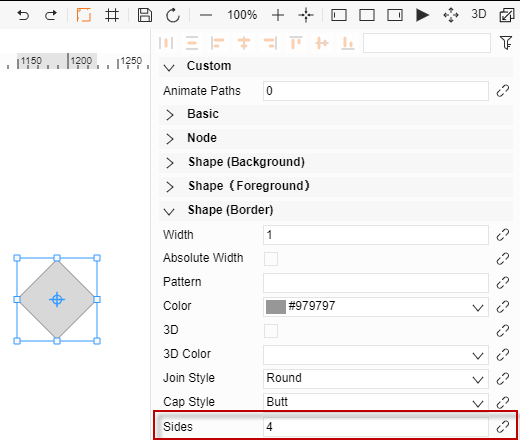
特殊屬性都屬於圖片邊框內
1. 圓角矩行特殊屬性
半徑：矩形四個出圓弧的半徑值
2. 圓弧：
起始、結束角度：控制圓弧形狀
是否閉合：邊框是否頭尾相連
3. 正多邊形
邊數：多邊形的邊數，默認為6，若小於3則顯示6邊形
匿名登入
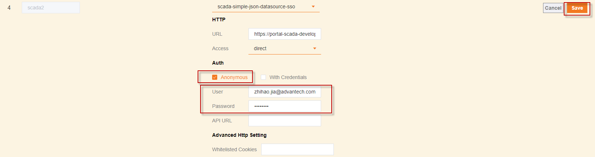
SaaS Composer 的資料來源支援匿名登入功能，即不需要登入WISE-PaaS 也可以預覽圖紙。
使用方式：
1. 在資料來源綁定時選擇 Anonymous 並取消 With Credentials
2. 分別在 User、Password 中填入正確的帳號以及密碼
3. 其餘配置方式不變，點擊保存按鈕即可
示例：
1、匿名登入綁定介面
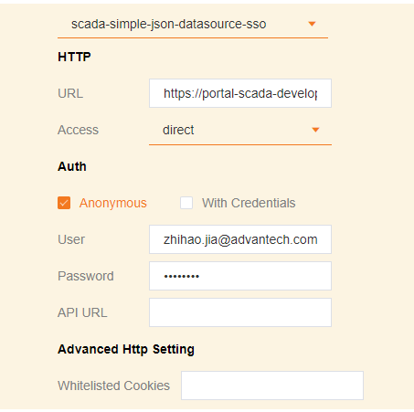
2、正常模式綁定介面
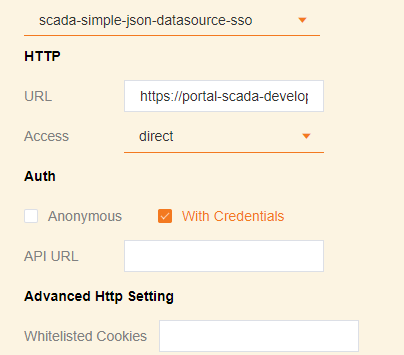
3、數據綁定
需要先在Management裡面綁定好資料來源，綁定方式見資料來源綁定章節
數據綁定
# 1-資料來源
1. 在management 頁面綁定好資料來源
2. 選中元素，點擊想要綁定的屬性右側的小連結按鈕打開資料綁定動作頁面 按鈕為鎖定並且橘色則表示以綁定資料，若為打開並且灰色則表示為綁定數
3. 資料來源頁面進行綁定資料
動畫頁面對資料進行一定的邏輯處理
資訊頁面顯示此元素的基本資訊
4. 點擊資料來源，在來源處選擇資料來源，並選擇所要綁定的具體資料
5. 資料格式有兩種
-Time Serises
-Table
6. 選擇好資料之後，目標欄會自動生成
# 2-動畫 -- Basic
動畫Basic有兩種方式：
-set match
-set interval
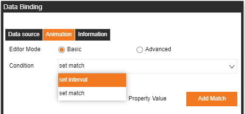
Set Match:
可以讓綁定的資料返回值做一次資料配對的邏輯處理，或者可以勾選”Direct Feed”讓資料直接寫入屬性內。
以下範例:
返回值如果等於1，則會寫入True到屬性內, 如果等於0，則會寫入False到屬性內
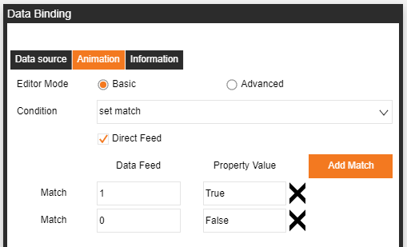
Set Interval:
可以讓綁定好的資料返回值做一次資料邏輯處理。
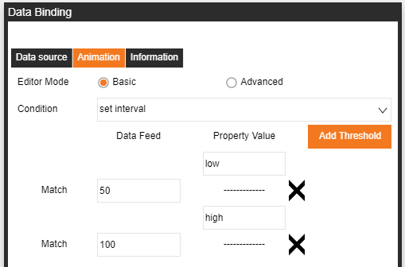
以下範例:
返回值值如果 X <= 50，則會寫入Low到屬性內，
如果50 < X <=100，則會寫入High到屬性內。
Basic會依照綁定屬性的格式來做相對應的Set match/interval左邊範例是當選取顏色屬性時的格式。
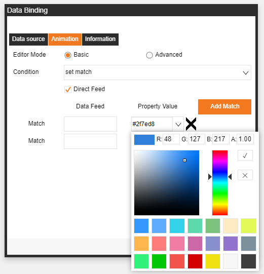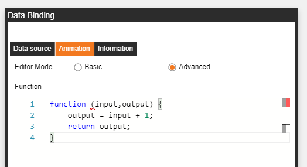
# 3-動畫 -- Advanced
Advanced 的Function是提供給使用者使用標準的Javascript來對返回的資料進行邏輯分析的功能。
以下範例:
input -> 綁定好的資料返回值
output -> 寫入到屬性的值
邏輯：
每次返回值會加1，再寫入到屬性裡